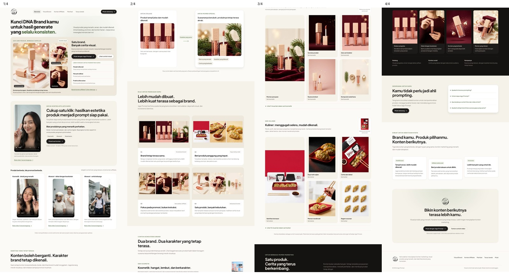

IMPLEMENTASI SOURCE · 15 NOVEMBER 2026
Rekonstruksi narasi homepage, dengan dasar desain investor tetap dipertahankan.
Mulai dari homepage hasil implementasi. Akun dan layanan AI tidak ada dalam source: paket ini tidak dinyatakan sebagai layanan komersial end-to-end yang sudah beroperasi.

466 pemeriksaan source/media, 68 skenario Chromium, dan 155 pemeriksaan HTTP lokal lulus. Batas metode render browser serta gerbang rilis dijelaskan dalam laporan, bukan disembunyikan.